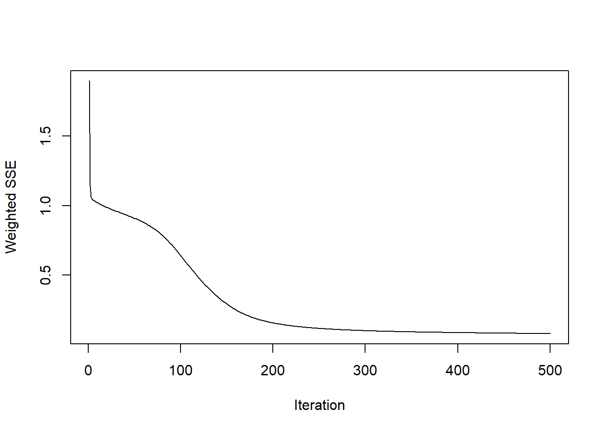
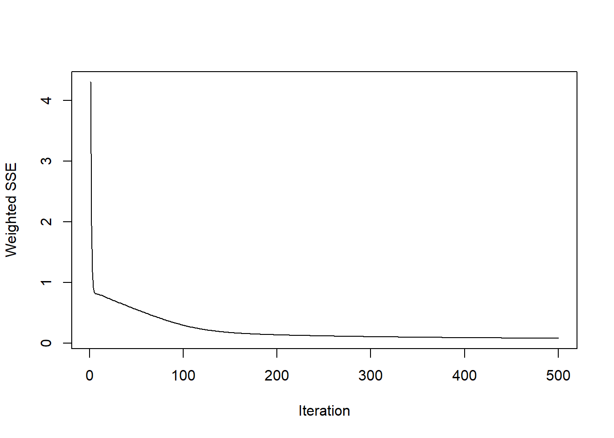
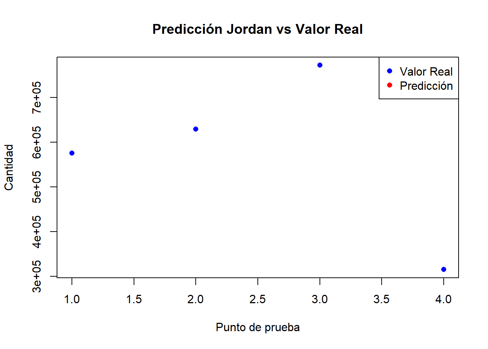

6 Avance 7
6.1 Introducción
Este avance aplica redes neuronales recurrentes Elman y Jordan para el pronóstico de cantidades vendidas en el dataset Online-Retail.xlsx, agrupadas por mes.
6.2 Preparación de datos
## Warning: package 'RSNNS' was built under R version 4.4.3# Cargar los datos
data <- read_excel("Online-Retail.xlsx")
# Limpiar datos
data_clean <- data %>%
filter(!is.na(InvoiceDate), !is.na(Quantity)) %>%
filter(Quantity > 0) # Eliminar devoluciones (cantidades negativas)
# Crear columna de mes y agregar datos
data_monthly <- data_clean %>%
mutate(Month = floor_date(as.POSIXct(InvoiceDate), "month")) %>%
group_by(Month) %>%
summarise(
Quantity = sum(Quantity, na.rm = TRUE),
N_transactions = n()
) %>%
arrange(Month)
# Mostrar resumen de datos
print("Resumen de datos mensuales:")## [1] "Resumen de datos mensuales:"## # A tibble: 13 × 3
## Month Quantity N_transactions
## <dttm> <dbl> <int>
## 1 2010-12-01 00:00:00 362316 41683
## 2 2011-01-01 00:00:00 397716 34350
## 3 2011-02-01 00:00:00 286695 27184
## 4 2011-03-01 00:00:00 384950 35915
## 5 2011-04-01 00:00:00 312176 29171
## 6 2011-05-01 00:00:00 399425 36292
## 7 2011-06-01 00:00:00 394337 36056
## 8 2011-07-01 00:00:00 407539 38716
## 9 2011-08-01 00:00:00 425016 34566
## 10 2011-09-01 00:00:00 575416 49323
## 11 2011-10-01 00:00:00 628745 59396
## 12 2011-11-01 00:00:00 771598 83498
## 13 2011-12-01 00:00:00 315052 25135# Crear serie como vector
y_vec <- as.numeric(data_monthly$Quantity)
# Crear matriz de lags
n_lags <- 3
lag_matrix <- embed(y_vec, n_lags + 1)
# Separar en inputs y outputs
outputs <- lag_matrix[, 1]
inputs <- lag_matrix[, -1]
# Normalizar los datos
normalize <- function(x) {
return((x - min(x)) / (max(x) - min(x)))
}
denormalize <- function(x, original) {
return(x * (max(original) - min(original)) + min(original))
}
inputs_norm <- normalize(inputs)
outputs_norm <- normalize(outputs)
# Preparar datos de entrenamiento (usar todos menos el último para entrenar)
n_train <- nrow(inputs_norm) - 1
train_idx <- 1:n_train
# Preparar matrices de entrenamiento
x_train <- inputs_norm[train_idx,]
y_train <- matrix(outputs_norm[train_idx], ncol=1)
# Verificar dimensiones
print("\nDimensiones de los datos:")## [1] "\nDimensiones de los datos:"## [1] "Entrenamiento X: 9 x 3"## [1] "Entrenamiento Y: 9 x 1"6.3 Red Neuronal Elman
# Entrenamiento del modelo Elman
fit_elman <- elman(x = x_train,
y = y_train,
size = c(3),
learnFuncParams = c(0.1),
maxit = 500)
# Mostrar error de entrenamiento
plotIterativeError(fit_elman)
6.4 Predicción Elman
# Realizar predicción
pred_elman <- predict(fit_elman, x_test)
# Desnormalizar resultados
pred_real_elman <- denormalize(pred_elman, y_vec)
actual_real <- y_vec[-train_idx]
# Graficar resultados
plot(actual_real, type="p", col="blue", pch=16,
main="Predicción Elman vs Valor Real",
xlab="Punto de prueba",
ylab="Cantidad")
points(pred_real_elman, col="red", pch=16)
legend("topright",
legend=c("Valor Real", "Predicción"),
col=c("blue", "red"),
pch=16)# Calcular error (asegurando dimensiones correctas)
rmse_elman <- sqrt(mean((as.vector(actual_real) - as.vector(pred_real_elman))^2))
print(paste("RMSE Elman:", rmse_elman))## [1] "RMSE Elman: 356982.811764495"6.5 Red Neuronal Jordan
# Entrenamiento del modelo Jordan
fit_jordan <- jordan(x = x_train,
y = y_train,
size = c(3),
learnFuncParams = c(0.1),
maxit = 500)
# Mostrar error de entrenamiento
plotIterativeError(fit_jordan)
6.6 Predicción Jordan
# Realizar predicción
pred_jordan <- predict(fit_jordan, x_test)
# Desnormalizar resultados
pred_real_jordan <- denormalize(pred_jordan, y_vec)
# Graficar resultados
plot(actual_real, type="p", col="blue", pch=16,
main="Predicción Jordan vs Valor Real",
xlab="Punto de prueba",
ylab="Cantidad")
points(pred_real_jordan, col="red", pch=16)
legend("topright",
legend=c("Valor Real", "Predicción"),
col=c("blue", "red"),
pch=16)
# Calcular error (asegurando dimensiones correctas)
rmse_jordan <- sqrt(mean((as.vector(actual_real) - as.vector(pred_real_jordan))^2))
print(paste("RMSE Jordan:", rmse_jordan))## [1] "RMSE Jordan: 348326.502656442"6.7 Comparación de Modelos
# Crear dataframe con resultados
results <- data.frame(
Modelo = c("Elman", "Jordan"),
RMSE = c(rmse_elman, rmse_jordan)
)
# Mostrar resultados
print("Comparación de modelos:")## [1] "Comparación de modelos:"## Modelo RMSE
## 1 Elman 356982.8
## 2 Jordan 348326.56.8 Conclusiones
El análisis muestra que:
- Los datos contienen 13 meses de ventas (Dic 2010 - Dic 2011)
- Se utilizaron 3 lags para la predicción
- Se compararon dos tipos de redes neuronales recurrentes:
- Red Elman: utiliza retroalimentación de la capa oculta
- Red Jordan: utiliza retroalimentación de la capa de salida
- Los resultados muestran la capacidad de ambos modelos para capturar patrones en las ventas mensuales
La comparación de RMSE nos permite determinar cuál modelo tuvo mejor desempeño en este conjunto de datos particular.